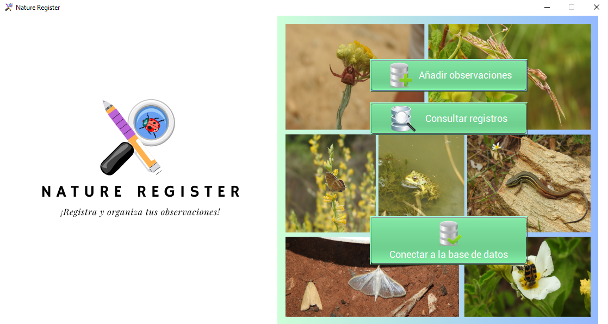

¿Qué nos ofrece Nature Register?
El sofware Nature Register se trata de un programa creado en Java, que nos
permite
poder organizar y gestionar la información de nuestras observaciones de la mejor manera posible.
Para ello hacemos uso de una base de datos SQLite, la cual nos permitirá acceder a la
información de
nuestras observaciones siempre que queramos.
En Internet existen numerosas páginas web que hacen posible todo lo mencionado
anteriormente.
Sin embargo,
a día de hoy no existe ningún sofware oficial que nos ayude con la organización de nuestros
registros a nivel local y privado.
Funcionalidades y ventajas
Una de las principales funcionalidades de Nature Register, evidentemente, es la de crear registros. Cada registro contendrá información relevante, ateniéndonos a las recomendaciones de la comunidad científica. Datos como la fecha, localización, coordenadas, nombre científico, entre otros, son considerados datos de suma importancia ya que nos ofrece información muy relevante sobre el/los individuos observados. Además también se tendrá la opción de añadir una fotografía.
Una vez completada toda la información del registro, se añadirá a una base de datos local la cual será consultable por el usuario en cualquier momento. Esta base de datos tiene implementada un sistema de filtrado que nos permitirán encontrar las observaciones buscadas. También nos da la facilidad de poder consultar, por ejemplo, todas las especies observadas en una determinada localidad o el número de taxones vistos.
A veces, entre tanta multitud de registros es totalmente normal no acordarnos de algunas especies. Por ello, Nature Register presenta un visor de observaciones, que nos permitirá ver la imagen de todos los registros añadidos en la base de datos, así como descargarlos.